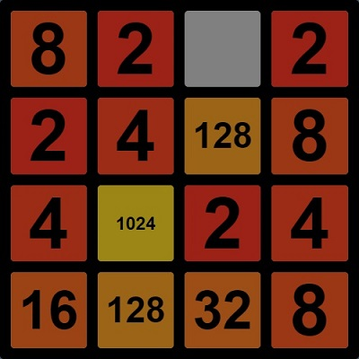

Introduction:
I'm a graduate from CU Boulder with a degree in math and a minor in computer science. This website is a place for me to share some of my programming projects.
4096
(Click here to play 4096!)
Description:
A scripted version of the game 2048 where players have the option to specify an algorithm for automated gameplay.
Inspiration:
After playing 2048 for a while, I realized I was subconsciously developing a simple algorithm for playing the game. I was pretty sure I could come up with a good enough algorithm for gameplay that it could probably get far past the 2048 tile. This seemed like more fun to me than playing the game, so I made 4096.
Areas For Improvement:
- GUI
- Better editor for automated algorithm input
- Show a list of helper functions available for writing automated algorithm
- Speed control for automation
- Make it so the game can be automatically run several times in a row and statistics about the runs will be shown(e.g. highest tile reached, how many moves it took, etc.)
Written With:
JavaScript, JQuery, HTML, CSS
GitHub:
https://github.com/coribeecroft/4096Nesting Docs
(Click here to see a nesting doc!)
Description:
This is a project that my brother and I are working on. It's a tool for creating HTML documents that can be read at varying levels of detail. The idea here is that different readers of a particular piece of writing have different levels of knowledge and interest in the subject of the piece. This tool allows readers to choose how detailed the document is while they're reading it.
My Contribution:
- Refactored a messy, convoluted code-base into something simpler and easier to use, which reduced to total line-count by 40%
- Fixed a fundamental flaw in the software
- Re-wrote most of the parser in a way that (incidentally) significantly simplified the markup language
- Changed the structure of the document nodes in the DOM from flat to hierarchical
Written With:
JavaScript, JQuery
GitHub:
This project is in a private repository
Description:
This is one of my brother's projects that I helped with. It is a data structure and algorithm visualization tool that can be used for debugging or getting a better feel for how complex algorithms work. A more detailed description of this project can be found here.
My Contribution:
High-level visual algorithm annotations for hash maps and trees
This feature highlights important subsets of data at different stages of an algorithm's execution. For example, this could be used to show the current element in a data structure traversal algorithm or it could highlight the subset of elements being worked on in a divide and conquer algorithm.
Queue-based pop-up messaging system
A system for delivering messages to users. Messages pop up at the bottom of the screen and fade out after a few seconds. If new messages pop up before the old ones disappear, a vertical queue of messages is formed.
Idea for visually navigating large data structures
Came up with a binary-search-inspired idea for one of the early systems of visual navigation of data structures (specifically trying to solve the problem of navigating very large data structures).
What Was Challenging:
The most challenging thing about working on this project was learning the large, abstract codebase.
Written With:
Java
GitHub:
Note: The code I wrote for the messaging system is in the main repository for this project which is private, but the code I wrote for the visual algorithm annotations can be found here: https://github.com/westoncb/DSViz-Java-Client
Doom Pet
Description:
A virtual pet game using graphics from id Software's original Doom games.
What Was Challenging:
This was a fairly large project with a lot of pieces so I got to solve a lot of interesting problems that varied from figuring out how to make projectile motion to creating systems for managing the states and behaviors of game entities(e.g. the pet, his food, etc).
Written With:
Java, a simple game framework